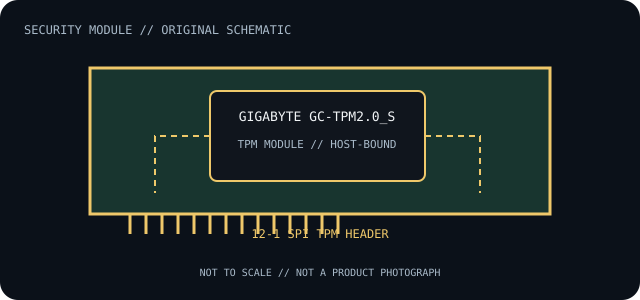

[ INDIVIDUAL COMPONENT // TRUSTED COMPUTING ]
GIGABYTE GC-TPM2.0_S
Discrete GIGABYTE TPM 2.0 accessory for compatible motherboard TPM headers. Record the module revision and board model together; similarly named GC-TPM modules are not assumed to share pinout or host support.

IDENTIFICATION: Confirm the printed part number, revision and host-board model. The connector, TPM generation, protocol transport and firmware support below are separate compatibility constraints.
Specifications and compatibility limits
| Catalog subcategory | Security coprocessors |
|---|---|
| Exact model / part identifier | GC-TPM2.0_S (board revision-specific) |
| TPM protocol / command interface | TCG TPM 2.0 command interface carried over the supported motherboard SPI TPM connection; no independent PCIe, USB or network interface. |
| Physical connector / transport | 12-1 pin keyed SPI TPM header module. Match the host board’s SPI TPM header wiring and orientation; a 20-1 or 14-1 LPC TPM socket is not interchangeable. |
| Host compatibility limit | Only GIGABYTE motherboard models documenting this exact accessory/revision and its matching 12-1 SPI TPM header, with compatible BIOS implementation. Some host systems use firmware TPM or different TPM wiring instead. |
| Firmware / OS compatibility limit | TPM 2.0 operation depends on the module’s supplied firmware, board BIOS/UEFI and the OS TPM stack. Firmware support is platform/revision-specific; do not cross-flash adjacent GC-TPM product variants. |
Installation, firmware and archival notes
- Before installation, record the module label/revision, host motherboard or server model, board revision, BIOS/UEFI version and TPM mode. Check the host’s own support list and installation diagram.
- Use ESD precautions and the documented module orientation. A physically fitting header may have different LPC/SPI signaling, pinout or voltage; never hot-plug a motherboard TPM module.
- TPM clear, replacement, firmware changes or mode changes can invalidate keys sealed to the previous TPM state. Back up recovery keys and follow the platform owner’s documented recovery procedure before service.
- This is a TPM, not a general-purpose cryptographic coprocessor or HSM: do not assume it offers PCIe/USB/network connectivity or vendor-specific bulk crypto APIs.
Where a manufacturer no longer publishes a current manual, preserve the source revision and verify the hardware against the original host platform before use.
Manufacturer and standard sources
- GIGABYTE — GC-TPM2.0_S product referenceManufacturer documentation for module identification and host/platform limitations.
- GIGABYTE — GC-TPM2.0 SPI V2 installation manualManufacturer installation documentation; confirm module revision and board header before applying its instructions.
- TCG — TPM 2.0 Library SpecificationStandards reference for the TPM generation and command model; it does not certify this module’s electrical or platform compatibility.
Source scope is explicit: manufacturer documents identify the part and host constraints; TCG documentation defines protocol generation. Standards compliance does not guarantee a particular board/firmware combination.